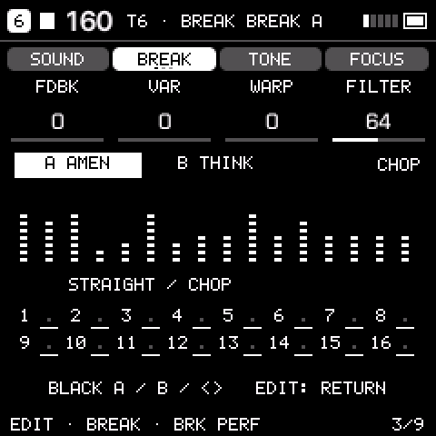

Generate a squelchy bassline, lock your favorite steps, and mutate the rest.
Explore JR ACIDMade to
make music.
Instruments, effects and new ways to connect them.
Find a sound, build a beat, or follow a new idea.
JR FX + JR ACID / LAUNCH IN PREPARATION
Explore the product guides and get launch news. Other JR projects remain in development.
Get JR launch news Free email updates
01 / CATEGORY
Instruments
02 / CATEGORY
Effects
Turn loops into live performances with hands-on pads and expressive effects.
Explore JR FX03 / CATEGORY
Mixing & routing
All your sounds. A little more connected.
Connect instruments, shape effects and catch the moment it all clicks. A mixer for ideas that want to play together.
Take a closer look Get project news ↗04 / CATEGORY
MIDI & sequencing
Find a chord. Change the mood.
Play rich MIDI chords, shape a progression and turn it into a sequence. Give your instruments a new direction.
Take a closer look Get project news ↗Generate evolving MIDI patterns for the instruments you already play.
Get launch news Visit product05 / CATEGORY
Sampling
Vintage sampling workflow. Fresh ideas. Chop it, tap it, make a classic.
Get launch news Visit product06 / CATEGORY
Grooveboxes & composition
Sketch a line and hear it become a playable musical phrase.
Get launch news Visit productBuild a beat and bend it live with scenes and performance controls.
Get launch news Visit productStart with a loop and turn it into a song.
Get launch news Visit productFOR MAC / AU + VST2 + VST3RHYTHMER
RHYTHMER
ENGINES.
20 sound engines. 36 drum kits. Find a sound, shape it and take a MIDI pattern into your DAW.
APPLE SILICON / 0.1.0 EARLY BETA
Download for Mac
07 / CATEGORY
FM-1 firmware
Jazzy and Rhythmer turn the M-VAVE FM-1 into a playground for sound and rhythm. Explore synth engines with Jazzy, or build beats and chop breaks with Rhythmer.
Jazzy

Explore the unheard, from FM and wavetable textures to drums and chopped breaks.
Explore JazzyRhythmer

Make a beat with drums, acid bass, and playable breaks on the FM-1.
Explore RhythmerFROM MY STUDIO / MPC SAMPLE
RHYTHMER OS · EARLY BETAYour MPC Sample.
A wider world of
sound and groove.
Synths, hands-on drums and playable breaks. A groovebox built on Melodee, with new engine ports and RHYTHMER tools to explore.

STUDIO NOTES / JR 2027
Follow the releases.
Get development previews and release announcements, along with new music from the studio.